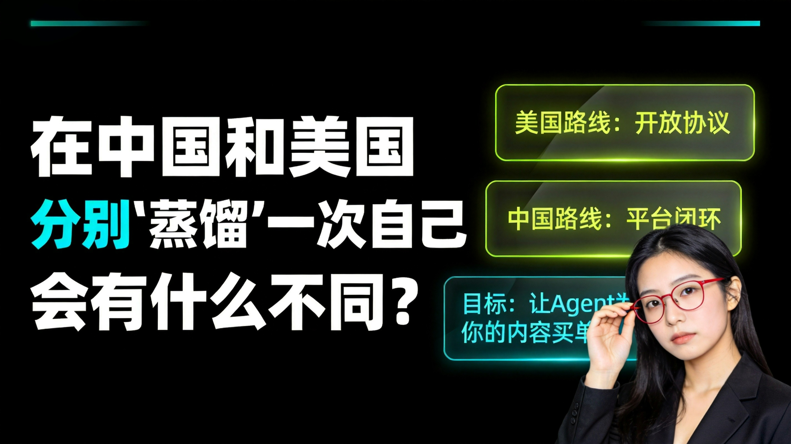

作者：小K爱研究 | AI产业链独立分析师
核心观点：中美两条路线殊途同归——美国修开放协议，中国走平台闭环。创作者要做的不是等路修好，而是边走边看哪条先通。
"蒸馏"这个词来自AI领域——把一个大模型的能力压缩成一个更轻、更可用的版本。
我把这个词拿来用在自己的内容创作上：
把我脑子里的判断、数据、分析框架，全部结构化，做成一个知识库。然后让AI Agent能调用它，调用一次付一次钱。
不是做课，不是做社群。是做一件事：
让我的判断变成Agent可调用的数据资产。
这件事在美国和中国都在发生。但走的是两条完全不同的路。
美国的做法是把一切"协议化"，修一条开放的高速公路，让Agent自己跑。
| 协议 | 作用 | 当前状态 |
|---|---|---|
| **x402** | AI Agent访问内容时自动付钱，0.05 USDC/次 | 已处理超1亿笔交易，Cloudflare/AWS/Stripe三巨头一个月内全部接入 |
| **MCP** | Agent连接知识库的标准接口，统一调用方式 | Anthropic推出后生态爆发，GitHub上相关项目月增200%+ |
| **ERC-8004** | 链上Agent身份注册表，建立"谁可信"的信誉体系 | 2026年1月上以太坊主网，已有数千Agent注册 |
修路让车自己跑。
创作者把数据结构化 → 挂到开放网络 → Agent来调用 → 自动收钱。
像水电煤一样，按用量计费。没有中间商，不需要平台审批，代码一接就能跑。
这条路的前提是两件事：
1. 加密货币合规——USDC结算在大部分国家合法
2. Agent生态成熟——要有足够多的Agent愿意调用你的数据
美国这两件事都已经解决了。
中国没走开放协议，走的是平台内闭环。
| 模式 | 案例 | 本质 |
|---|---|---|
| 虚拟陪伴APP | 7月15日前大量上线的产品 | AI跟用户聊天，用户充值买互动时长 |
| 公众号+AI客服 | 头部知识博主 | 你付费提问，AI基于知识库回答 |
| 知识星球/小程序 | 各类垂直领域 | 付费社群，AI辅助内容交付 |
建停车场按次收费。
本质上也是"Agent使用内容 → 用户付费"。
只是钱从"Agent直接付"变成了"用户在平台内付费"。
7月15日关掉了大批虚拟陪伴APP，说明这条路已经在跑，只是监管在跟进。
| 维度 | 美国 | 中国 |
|---|---|---|
| 付费主体 | AI Agent直接付 | 用户代付 |
| 收费方式 | API按次计费(USDC) | APP内购/会员(人民币) |
| 基础设施 | 公链+开放协议 | 平台+封闭生态 |
| 创作者自由度 | 高，自己定规则 | 低，受平台约束 |
| 监管风险 | 低，合规框架清晰 | 高，政策仍在收紧 |
别被表面差异骗了。两条路的底层逻辑完全一样：
1. 创作者有结构化数据（判断、经验、框架）
2. 数据被AI Agent调用
3. 调用方付费
4. 创作者获得收入
目的地一样，路径不同。
美国是"让Agent自己来买东西"，中国是"用户在超市里替Agent买单"。
先走平台闭环。
公众号+知识库+AI客服，验证一件事：你的判断有人愿意付费。
不需要等技术，不需要懂区块链。把内容结构化，接个AI客服，用户愿意为精准回答掏钱——这就够了。
可以同时试开放协议路线。
x402+MCP，让海外Agent直接为你的内容买单。中文圈做这件事的人，我翻了一圈，接近于零。
因为"中国没有x402"就觉得做不了。
不是做不了，是换了一种方式做。
我的状态：在国内，有海外背景，做AI产业链分析。
第一步（现在）：在国内平台跑通"知识库→AI辅助交付→用户付费"的闭环。
第二步（并行）：把结构化数据准备好，等x402或类似协议在国内合规时第一时间接入。
第三步（远期）：通过HK公司接入海外Agent生态，做"中美双线蒸馏"。
不是等路修好了再走，是边走边看哪条路先通。
"蒸馏自己"不是一句口号。
是AI时代创作者的必经之路——
你脑子里的东西，比写出来的多太多。如果不结构化，80%会消失。
更关键的是：Agent已经在找这些数据了。它们用了，你一分没收到。
与其等着被白嫖，不如自己先动起来。
*我是小K，每天拆AI产业链的数据，给赛道判断。不卖课，不站队，只给判断。*
*想跟的点个关注，后面持续更新进度，不藏着掖着。*
声明：本文内容仅作科普和分析，不构成任何投资建议。
数据来源：
- x402协议官方文档（Coinbase/Cloudflare）
- MCP协议官方文档（Anthropic）
- ERC-8004以太坊改进提案
- 公开市场数据
本内容由 Coze AI 生成，请遵循相关法律法规及《人工智能生成合成内容标识办法》使用与传播。← 返回首页